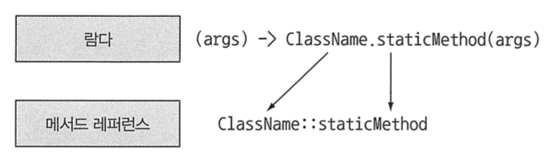

람다 표현식 (Lambda Expression)
Java8에서 새롭게 추가된 람다 표현식을 정리합니다.
Table of Contents
- 람다란 무엇인가?
- 람다를 어디에서 어떻게 사용할까?
- 람다 활용 : 실행 어라운드 패턴
- 자바8의 함수형 인터페이스
- 메서드 레퍼런스 (Method Reference)
- 람다, 메서드 레퍼런스 활용 예제
람다란 무엇인가?
람다 표현식 (Lambda Expression) 은 메서드로 전달할 수 있는 익명 함수를 단순화한 것이라고 할 수 있다.
람다를 사용하면 더 쉽게 동작 파라미터 형식의 코드를 구현할 수 있으며, 이에 따라 코드가 더 간결하고 유연해진다.
람다의 특징
- 익명 : 람다는 익명 메서드 처럼 이름이 없다.
- 함수 : 람다는 메서드처럼 특정 클래스에 종속되지 않기 때문에 함수라고 부를 수 있다. 하시만 메서드처럼 “파라미터 리스트”, “바디”, “반환 형식”, “가능한 예외 리스트”를 포함한다.
- 전달 : 람다 표현식을 메서드의 인수로 저장하거나 변수로 지정할 수 있다.
- 간결성 : 익명 클래스처럼 자질구레한 코드 구현이 필요 없다.
람다의 구성요소
1 | // Before |
- 파라미터 리스트 : Comparator의 compare 메서드의 파라미터 (두 개의 사과. first, second)
- 화살표 : 화살표(->)는 람다의 파라미터 리스트와 바디를 구분한다.
- 바디 : 두 사과의 무게를 비교한다. 람다의 반환값에 해당하는 표현식이다. 람다는 return이 함축되어 있기 때문에 명시적으로 사용하지 않아도 된다.
람다의 기본문법
(parameters) -> expression 또는 (parameters) -> { statements; }
람다를 어디에서 어떻게 사용할까?
람다 표현식은 함수형 인터페이스라는 문맥에서 사용할 수 있다.
“함수형 인터페이스”란 단 하나의 추상 메서드를 지칭하는 인터페이스를 의미한다. Comparator, Runnable, Callable, Predicate 등이 있다.
람다 표현식은 함수형 인터페이스의 추상 메서드 구현을 직접 전달할 수 있다. 따라서 전체 표현식을 함수형 인터페이스로 취급할 수 있다.
1 | // Runnable 함수형 인터페이스 (참고용) |
함수 디스크립터 (Function Descriptor)
- 람다 표현식의 시그니처(Signature)를 가리키는 “함수형 인터페이스의 추상 메서드 시그니처”
- 예를 들어 Runnable 인터페이스의 유일한 추상 메서드인 run은 인수와 반환값이 없으므로 Runnable 인터페이스는 인수와 반환값이 없는 시그니처로 생각할 수 있다. 즉, () -> void 라는 표기법으로 표현할 수 있다.
람다 활용 : 실행 어라운드 패턴
데이터베이스 연동, 파일 읽기/쓰기 등의 작업은 보통 다음과 같은 순환 패턴(Recurrent Pattern)로 이뤄진다.
- Resource Open (초기화 / 준비 코드)
- Processing (실제 처리 코드)
- Resource Close (정리 / 마무리 코드)
Resource Open/Close와 같이 실제 처리 코드를 둘러싸는 형식의 코드를 실행 어라운드 패턴(Execute Around Pattern) 이라고 부른다.
1 | /** |
자바8의 함수형 인터페이스
자바8 라이브러리 설계자들은 java.util.function 패키지로 여러 가지 새로운 함수형 인터페이스를 제공한다.
Predicate
Predicate
즉, T 형식의 객체를 사용하는 Boolean 표현식이 필요한 상황에서 Predicate 인터페이스를 사용할 수 있다.
1 |
|
Consumer
Consumer
T 형식의 객체를 인수로 받아서 어떤 동작을 수행하고 싶을 때 Consumer 인터페이스를 사용할 수 있다.
1 |
|
Function
Function<T, R> 인터페이스는 제네릭 형식 T를 인수로 받아서 제네릭 형식 R 객체를 반환하는 apply라는 추상 메서드를 정의한다.
입력을 출력으로 매핑하는 람다를 정의할 때 활용할 수 있다.
1 |
|
기본형 특화
자바는 “기본형”, “참조형” 2가지 형식이 존재하는데, 제네릭은 내부 구현상 참조형만 사용할 수 있다.
- 기본형 (Primitive Type) : int, double, byte, char 등
- 참조형 (Reference Type) : Byte, Integer, Object, List 등
기본형과 참조형을 혼합하여 사용할 경우 변환 과정이 필요하다. 자바에서는 이 과정이 자동으로 이뤄지며, 이를 *오토 박싱(Auto Boxing)”이라고 한다. 그러나 변환시 박싱한 값은 메모리를 더 많이 소모하며, 기본형을 가져올 때에도 메모리를 탐색하는 과정이 추가로 필요하다.
- 박싱(Boxing) : 기본형 -> 참조형
- 언박싱(Unboxing) : 참조형 -> 기본형
자바8에서는 기본형 타입을 사용할 때 오토박싱을 하지 않도록 특별한 함수형 인터페이스를 제공한다.
일반적으로 기본형 특화 함수형 인터페이스는 이름 앞에 DoublePredicate, IntConsumer, LongBinaryOperator, IntFunction 처럼 형식명이 붙는다.
자바8의 대표적인 함수형 인터페이스
| 함수형 인터페이스 | 함수 디스크립터 | 기본형 특화 |
|---|---|---|
| Predicate |
T -> boolean | IntPredicate, LongPredicate, DoublePredicate |
| Consumer |
T -> void | IntConsumer, LongConsumer, DoubleConsumer |
| Function<T, R> | T -> R | IntFunction |
| Supplier |
() -> T | BooleanSupplier, IntSupplier, LongSupplier, DoubleSupplier |
| UnaryOperator |
T -> T | IntUnaryOperator, LongUnaryOperator, DoubleUnaryOperator |
| BinaryOperator |
(T, T) -> T | IntBinaryOperator, LongBinaryOperator, DoubleBinaryOperator |
| BiPredicate<L, R> | (L, R) -> boolean | |
| BiConsumer<T, U> | (T, U) -> void | ObjIntConsumer |
| BiFunction<T, U, R> | (T, U) -> R | ToIntBiFunction<T, U>, ToLongBiFunction<T, U>, ToDoubleBiFunction<T, U> |
메서드 레퍼런스 (Method Reference)
메서드 레퍼런스는 특정 메서드만을 호출하는 람드 표현식의 축약형 이라고 볼 수 있다.
메서드 레퍼런스를 사용하면 경우에 따라 람다 표현식 보다 더 가독성이 좋으며, 메서드 명을 바로 사용하기 때문에 자연스러울 수도 있다.
1 | // before |
메서드 레퍼런스 유형
- 정적 메서드 레퍼런스
- Integer의 parseInt 메서드는
Integer::parseInt로 표현 가능
- Integer의 parseInt 메서드는
- 다양한 형식의 인스턴스 메서드 레퍼런스
- 
- String의 length 메서드는
String::length로 표현 가능 (String s) -> s.toUpperCase()람다 표현식을String::toUpperCase로 줄여서 사용 가능
- 기존 객체의 인스턴스 메서드 레퍼런스
- Transaction 객체를 할당받은 expensiveTransaction 지역변수가 있고, Transaction 객체에는 getValue 메서드가 있다면,
expensiveTransaction::getValue로 표현 가능 () -> expensiveTransaction.getValue()람다 표현식을expensiveTransaction::getValue로 줄여서 사용 가능
- Transaction 객체를 할당받은 expensiveTransaction 지역변수가 있고, Transaction 객체에는 getValue 메서드가 있다면,
생성자 레퍼런스
ClassName::new 처럼 클래스명과 new 키워드를 사용해서 생성자의 레퍼런스를 만들 수 있다.
1 | /** |
람다, 메서드 레퍼런스 활용 예제
1 | // 1단계 : 동작 파라미터화를 통한 코드 전달 |